RxSwift 5 更新了什么？
原文：What’s new in RxSwift 5 作者：freak4pc
译注：在此感谢 freak4pc 为社区所作出的贡献。
RxSwift 5 终于发布了，我（freak4pc）认为这是一个很好的机会，来分享这次发布中最有价值的更新。
别担心，这次发布几乎是向前兼容的，只有少数弃用和重命名的 API。但它还包含了许多改进，我（freak4pc）将在下面详细介绍。
RxRelay 现在是一个独立的框架
RxRelay 是一个在 Subjects 之上很好的抽象层。它可以让我们发出元素，而不用担心 error 和 completed 这样的终止事件。由于它们被添加到 RxSwift 中，并且是 RxCocoa 项目的一部分。
许多开发者对此很不乐意。因为他们如果要使用 Relays 就必须引入 RxCocoa，即便他们编写的代码与 RxCocoa 没有任何关系。这其实是很不合理的。并且这样一来 Linux 用户就无法使用 Relays，因为 Linux 无法导入 RxCocoa。
由于上述原因，我们将 Relays 拆分成一个独立的框架 - RxRelay -- 并且调整 RxSwift 的依赖图，如下：
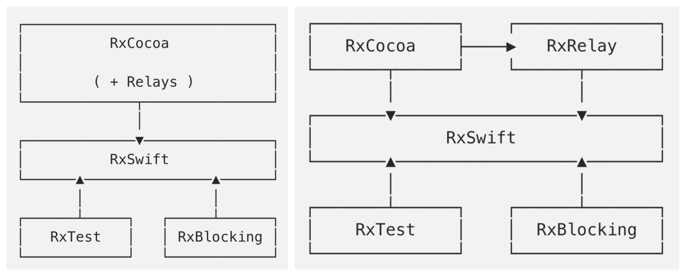 左侧： RxSwift 4 依赖图，右侧： RxSwift 5 依赖图
这样我们可以引入 RxRelay，而不需要导入整个 RxCocoa 框架。并且这也和 RxJava 保持一致，因为在 RxJava 那边他也是一个独立的框架。
注意：这是一个向前兼容的改动，由于 RxCocoa 依赖于 RxRelay。意味着，只要导入 RxCocoa 并不需要导入 RxRelay，一切就会和以前一样正常工作。
TimeInterval → DispatchTimeInterval
RxSwift 5 中重构了 Schedulers，弃用了 TimeInterval，转而使用 DispatchTimeInterval。这样就与底层时间 API 保持一致，不会丢失精度。
他会影响到所有基于时间的操作符，如：debounce，timeout，delay，take 等等。作为额外的收获，他还解决了 take 入参的歧义，因为之前无法判断参数代表多少秒，还是多少个。
RxSwift 4
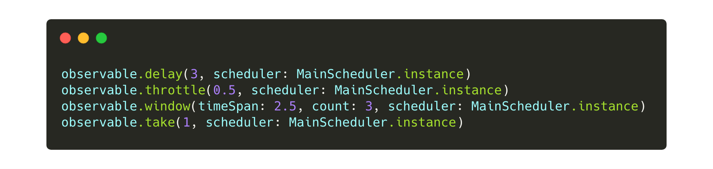
RxSwift 5
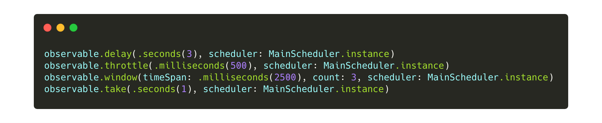
Variable 最终被弃用了
Variable 是早期添加到 RxSwift 的概念，通过 “setting” 和 “getting” 他可以帮助我们，从原先命令式的思维方式，过渡到“响应式的思维方式”。
这种做法被证实是有问题的，许多开发者滥用 Variable， 来构建 重度命令式 系统，而不是 Rx 的 声明式 系统。这对于新手非常常见，并且让他们无法意识到，这是代码的坏味道。所以在 RxSwift 4.x 中 Variable 被轻度弃用，仅仅给出一个运行时警告。
在 RxSwift 5.x 中，他被官方的正式的弃用了，并且在需要时，推荐使用 BehaviorRelay 或者 BehaviorSubject。
RxSwift 4
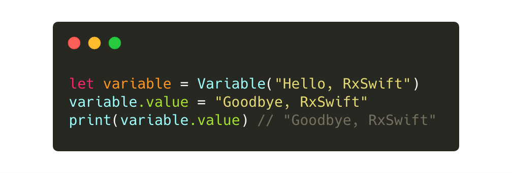
RxSwift 5
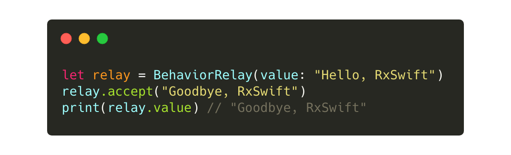
补充 do(on:) 重载方法
do 是一个很棒的操作符，当你想添加一些附加作用，如：打印日志。
为了与 RxJava 对齐，RxSwift 现在不仅提供 do(onNext:)，而且还提供 after 重载方法，例如：do(afterNext:)。onNext 代表元素发送了，但未被转发到下游。而 afterNext 代表元素发送了，并已经被转发到下游。
RxSwift 4
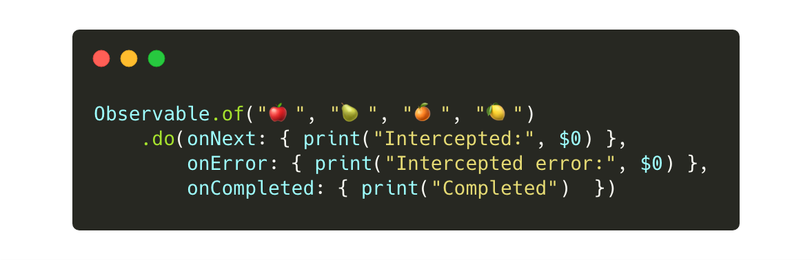
RxSwift 5
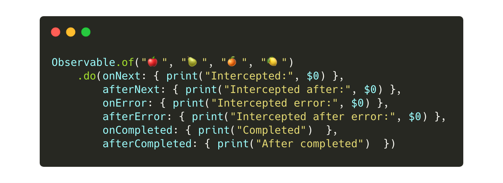
bind(to:) 现在支持多个观察者
在一些情况下，你不得不将流绑定到多个观察者上。在 RxSwift 4 中，你通常需要重复绑定代码：
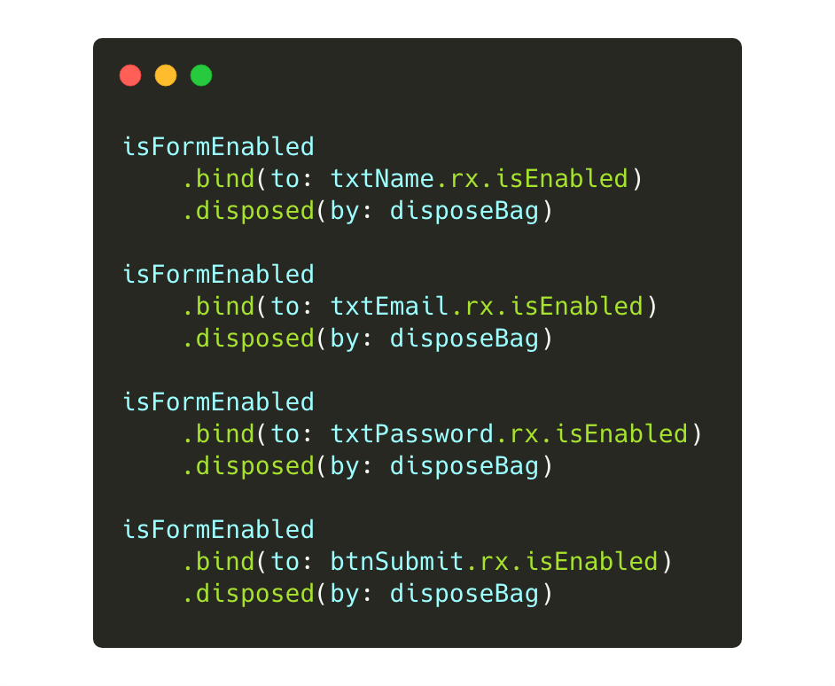
RxSwift 5 现在支持绑定多个观察者： 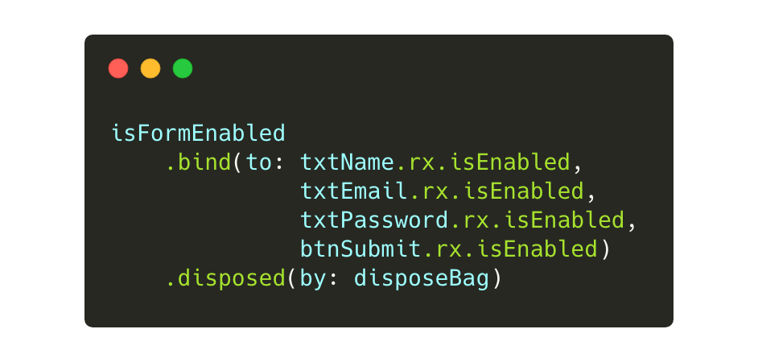
新增 compactMap 操作符
作为开发者，你通常要处理可选型。为了将它拆包，社区有专门的解决办法。例如： RxSwiftExt 的 unwrap 操作符，或者 RxOptional 的 filterNil 操作符。
RxSwift 5 新增了一个新的操作符 compactMap，从而对齐了 Swift 标准库，将这种功能带入到核心库。
RxSwift 4
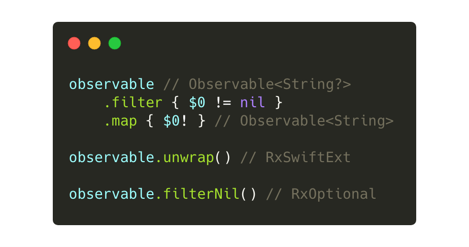
RxSwift 5
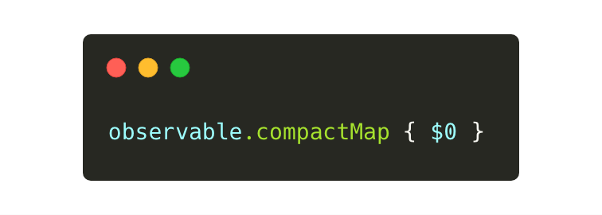
toArray() 现在返回 Single<T>
toArray() 操作符将所有的元素以数组的形式发送出去，在流完成时。
自从 RxSwift 诞生以来，这个操作符一直都是返回 Observable<T>，但是在特征序列被引入以后，尤其是 Single。将返回类型改为 Single 会更加合适，这不仅提供了类型安全，并且还保证该操作符只会发出一个元素。
RxSwift 4
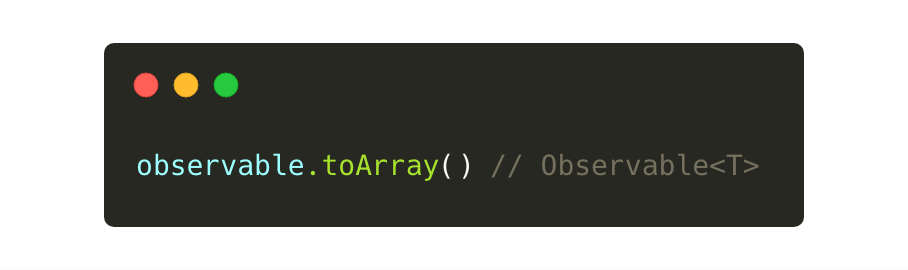
RxSwift 5
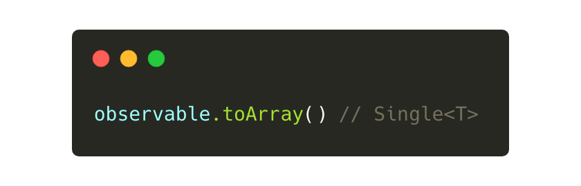
更新范型约束名称
RxSwift 是范型约束的重度使用者。早些时期，他使用单个字母来表示某个类型。例如，ObservableType.E 代表 Observable 的元素。
这是可行的，但是有时候会造成混淆，如 O， 既可以代表 Observable，也可以代表 Observer。他们的首字母都是 O。另外 S 既可以代表 Subject, 也可以代表 Sequence。
此外，这些单字母约束并不能提供良好的“自解释”代码，并使得项目贡献者以外的人，难以理解他们的含义。
出于这些原因，我们对私有和公共接口的大多数通用约束进行了全面修改，使其更清晰和详细。
影响最大的重命名是将 E 和 ElementType 改为 Element。
RxSwift 4
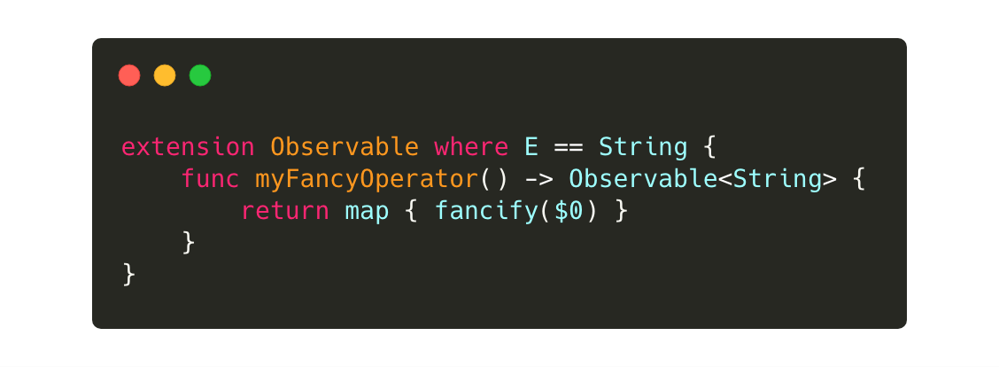
RxSwift 5
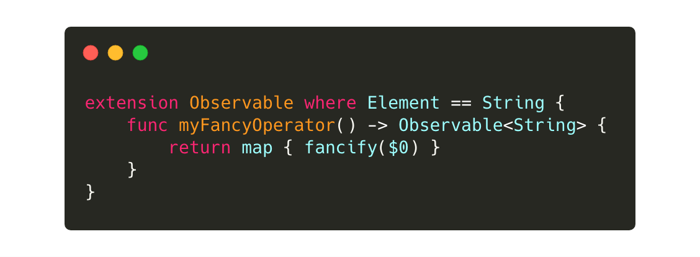
这次重命名的范围广泛。下面有一个完整的清单。大多数都是内部 API，只有少数与我们这些开发者相关：
E和ElementType改为Element。TraitType改为Trait。SharedSequence.S改为SharedSequence.SharingStrategy。O改为Observer和Source，仅在适用的情况下。C和S分别被改为Collection和Sequence。S改为Subject，仅在适用的情况下。R改为Result。ReactiveCompatible.CompatibleType改为ReactiveCompatible.ReactiveBase。
社区项目
许多 RxSwift 社区 项目已经迁移到 RxSwift 5 ，并且发布了相应的版本。因此迁移过程将会非常平滑。其中一部分已经迁移的项目是： RxSwiftExt, RxDataSources, RxAlamofire, RxOptional...
综上所叙
上面列出来的更改都是与我们开发者息息相关的。还有许多的小修小补，就超出了本文的讨论范围。例如，在Linux下完全修复与Swift 5的兼容性问题等等。
请随意查看完整的更新日志，并参与到官方库的讨论中来：https://github.com/ReactiveX/RxSwift
希望你喜欢这篇文章 :-)